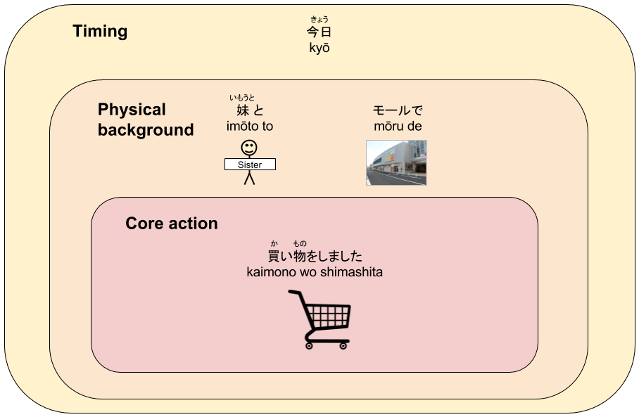

In Japanese, word order is less important than it is in languages like English thanks to the existence of particles. As I talked about in my guide to Japanese sentence structure, particles, not word order, are what determines how each part of a sentence relates to the verb:
(If you haven’t read my article on Japanese sentence structure, I recommend doing so.)
As a starting point, most basic sentences can be formed using the following pattern:
The pieces of other information can generally be expressed in any order without affecting the fundamental meaning of the sentence, as long as they are accompanied by the appropriate particles.
However, for any given sentence, there is usually a particular word order that sounds more natural than others. This is because word order affects where the emphasis in a sentence lies.
In this article, I will show you the thinking behind natural Japanese wordorder, and give you some basic rules that you can easily apply. Ill also give you some exercises you can do to help you think like a Japanese speaker so that forming natural-sounding sentences becomes automatic.
Lets get started.
The Big Picture
Before we get into specifics, let’s start by looking at the big picture so we can understand the fundamental approach to word order in Japanese, and how it differs from English.
The fundamental rule that applies to all Japanese sentences is this:
New or important information should appear later in the sentence
While this is true, it isn’t particularly easy to apply in practice, as we don’t usually think too much about which information is new or more important. It also doesn’t help us with neutral sentences where all the information is new.
We need a more practical starting point.
If English is your native language, you are used to describing the core part of an action first, and then adding detail later.
Japanese, on the other hand, is essentially the opposite of this. In neutral sentences, most of thedetail is described before the core action, which usually comes at the very end.
Obviously the topic of the sentence – in this case “Eri” – comes first,even though it’s fairly central to the main action, butwe should treat that as an exception. For everything else, therelatively minor details come before the more critical elements describing the action.
One way to look at this difference is tosay that English isInside-out andJapanese isOutside-in.
Let me explain…
In English, after starting by saying who did the action, we then include all of the detail about that action starting from the action itself and moving outwards.
Take this example:
I ate lunch in the park on Tuesday.
After I, we express the action itself – eating – followed by the thing directly affected by that action – lunch.
Only after describing the core action do we move outwards from the action to add less important information, such as the location and the timing:
We can change the order and, for example, move “On Tuesday”to the beginning of the sentence, but that would place a bit more emphasis on the timing. For now, we are focused on neutral sentences that dont have that kind of emphasis.
The most neutral way to express the above sentence in Japanese would be:
I ate lunch in the park on Tuesday.
I on Tuesday in the park lunch ate.
watashi wa kaybi ni ken de hirugohan wo tabemashita.
As with English, the person performing the action is mentioned first, but after that, everything else is described starting with the environment surrounding the activity then moving inwards until we finally state the action itself:
If you’ve ever thought that Japanese grammar is completely backwards, this is probably why.
A more general diagram for theabove idea wouldlook like this:
As you can see, there are three main zones:
- timing
- physicalbackground
- the action itself
These don’t cover absolutelyevery kindof information that we would ever want to include in a sentence, but they do cover most things.
As a general rule, in Japanese, if you expressall the information you want to convey zone-by-zone moving inwards,you’re sentences will mostly sound natural.
Applying this to simple sentences
Now that we can see the big picture, let’s see how we can putthe “Outside-in” approach into practice.
First, we must remember that the topic (marked by “wa”) is an exception in that it usually comes first, even though it often describes the person who is at the center of the activity. That’s a whole separate issue foranother time, but it means thatwe should useour basic sentence structure framework from earlier…
…and apply the “outside-in” approach to the ‘other information’, plus the verb itself.
What we include as other information will obviously vary depending on the situation, butwe’ll start by focusing on three types of actions:
- Actions that take place in one location
- Actions that involve movement from one place to another
- Actions that involve the movement of a separate object
Actions that take place in one location
Most actions fit in this category, and the most common pieces of information that we would include when describing them would be:
- The object – ie. the thing that the action is done to
- The place/location where the activity takes place
- The timing of the activity
There are obviously other things we can add, but we’ll get to that a bit later.
First, let’s look at our sentence from earlier:
I ate lunch in the park on Tuesday.
Here, the object is “lunch”, the place is “the park”, and the timing is “on Tuesday”.
As we saw, applying the outside-in approach gives us the following in Japanese:
I on Tuesday in the park lunch ate.
watashi wa kaybi ni ken de hirugohan wo tabemashita.
This demonstrates a simpleword order pattern that can be applied to all sentences like this – TTPOV:

If you stick to this pattern for sentences that include these pieces of information, you will almost always sound natural.Just make sure you include the appropriate particle after each word or phrase (except for some time expressions).
Here are some examples:
I read a book at the library on Sunday.
I on Sunday at the library a book read.
watashi wa nichiybi ni toshokan de hon wo yomimashita.
Mari made sushi at home today.
Mari today at home sushi made.
mari wa ky ie de sushi wo tsukurimashita.
My older brother is watching TV in his room now.
My older brother now in his room TV is watching.
ani wa ima heya de terebi wo mite imasu.
For these sentences, it’s also fine to switch the “T”s (Topic and Time)around so that the time expression is first, followed by the topic. This changes the emphasis a little, but it doesn’t make a big difference, and it means thatyou don’t have to worry too much about which “T” in TTPOV comes first.
Actions that involve movement from one place to another
In cases where we are talking about an action that involves movement from one place to another, such as ‘going’, ‘coming’ or ‘returning’, the information we wouldmost commonly include is:
- The destination
- The means of transportation
- The timing
Again, there is more we can add, but wewon’t worry about that just yet.
Here’s an example sentenceinvolving movement:
Kenta went to the beach by bus yesterday.
The vocabulary we need for this sentence includes:
| yesterday | kin |
| went | ikimashita |
| beach | umi |
| bus | basu |
If we put this into our outside-in diagram, it looks likes this:
Now,you might be thinking that in the physical world, the bus is closer to the act of ‘going’ than the destination. After all, Kenta is physically inside the bus for the entire duration of the action, whereas he is only physically close tothe beach at the end.
The important thing to remember when applying the “outside-in” approach isthat it doesn’t necessarily refer to what objects or places are physically inside or outside the others. Instead, it refers to how importanteachelement is tothe main action that is taking place.
Essentially, thecentral part – “the action itself” – refers tothe main goal thatthe person involved is trying to achieve. In our example, Kenta’s goal is not to ride the bus – it is to get to the beach. That act of motion is the core activity, and the destinationis therefore more than just part of the physical background.
With that in mind, themost neutral and naturalway to express this in Japanese would be:
Kenta went to the beach by bus yesterday.
Kenta yesterday by bus to the beach went.
kenta wa kin basu de umi ni ikimashita.
A simple way to remember the word order for sentences like these would be to alter TTPOV toTTMDV:
As always, wordorder is secondary to particles, so make sure you combine the right particles with each element according to its role in the sentence.
Here are some more examples:
He came here by car on Thursday.
He on Thursday by car here came.
kare wa mokuybi ni kuruma de koko ni kimashita.
My older sister will return to the family home tomorrow by train.
My older sister tomorrow by train to the family homewill return.
ane wa ashita denshade jikka ni kaerimasu.
I go to work every day by bicycle.
I every day by bicycle to work go.
watashi wa mainichi jitensha de shigotoni ikimasu.
Actions that involve the movement of a separate object
Some actions, such as sending, giving, “taking” or “putting”, involve movement, but the thing that moves is not the same as the person causing it to move.
For example, if I go somewhere, then I am the person that causes the movement while also being the thing that moves. If, however, I send something to someone, I am performing the act of sending, but the thing that actually moves from one place to another is the ‘something’.
For sentences like these, we basicallyneed to combine the two types of activities described above, since there is both adestination and an object. To figure out how we do that, let’s look at an example:
I will send the photo to my friendbyemail in the afternoon.
We can put this into our diagram like this:
{kind=link}
As shown here, both the photo (object) and the friend (destination) are part of thecore action. So which order should these be expressed in?
Before worrying about this too much, it’s important to remember that as long as the particles are correct, theorder doesn’t make a big difference.With this in mind, we can then find the more natural word order usingour original rule – that new orimportant information should appear later in the sentence.
When buildinga sentence like our example, there is usuallya main point that we are trying to communicate; that is, we either want tosaythat the photo will be sentto the friend, or that it is a photo that will be sent to them. One of them is usually more important, and thatiswhatshould go last.
This is where context matters a lot. We’ll look at that a bit more in the Excluding Some Information and Adding Other Information sections below.
Before that, though, we need a neutral word order for when there is no context. We could probably argue that the photo is a more central part of the action, since it is the thing that actually moves, so our Japanese version of the above diagram would look something like this:
The natural word ordering for a neutral version of this sentence would therefore be:
I will send the photo to my friend by email in theafternoon.
I in the afternoon by email to my friendthe photo will send.
watashi wa gogo ni mru de tomodachi ni shashin wo okurimasu.
In certain contexts, this might be less natural thanputting“tomodachi ni”(to my friend) immediately before the verb, but for now, this will do just fine.
Regardless, as a starting point for actions like these, we cancombineTTPOV and TTMDV to become TTMDOV:
Now we can just apply TTMDOV to every action that involves movement, with the Object only being included when it actually exists. The Means will also often be excluded from these sentences, since this information isn’t usually relevant or important with verbs of this nature.
Here are some more examples:
Tomoko will return the book to the library by post next week.
Tomoko next week by post to the library the book will return.
Tomoko wa raish ybin de toshokan ni hon wo kaeshimasu.
Yoshitaka didn’t givehis mother a birthday presentlast year.
Yoshitaka last year to his mother a birthday present didn’t give.
Yoshitaka wa kyonen oksan ni tanjbi purezento wo agemasen deshita.
I put your new shirt in the closet yesterday.
I yesterday in the closet your new shirt put.
watashi wa kin kurzetto ni anata no atarash shatsu wo iremashita.
Excluding some information
Wedont, of course, always need to include all of the TTPOV or TTMDOV elements.
If a certain piece of information is obvious from context, or, conversely, if it is unknown, not particularly important, or doesn’t even exist, then we can simply drop it from the sentence. When we do this, the order of the remaining elementsgenerally stays the same.
For example, if it is obvious who or what the topic of the sentence is, we can leave it out and keep everything else the same. One of our sentences from earlier could therefore be shortened to:
(I) ate lunch in the park on Tuesday.
On Tuesday in the park lunch ate.
kaybi ni ken de hirugohan wo tabemashita.
This is very common in Japanese because, by definition, the topic is the person or thing that is being talked about, so it is usually obviousfrom context.
Similarly, we can leave out the timing:
I ate lunch in the park.
I in the park lunch ate.
watashi wa ken de hirugohan wo tabemashita.
Orthe place:
I ate lunch on Tuesday.
I on Tuesday lunch ate.
watashi wa kaybi ni hirugohan wo tabemashita.
Or the means of transportation for actions of movement:
Kenta went to the beach yesterday.
Kenta yesterday to the beach went.
kenta wa kin umi ni ikimashita.
We can omit the object, too:
I ate in the park on Tuesday.
I on Tuesday in the park ate.
watashi wa kaybi ni ken de tabemashita.
Or the destination:
Kenta went by bus yesterday.
Kenta yesterday by bus went.
kenta wa kin basu de ikimashita.
Or both:
I will send (it) by email in the afternoon.
I in the afternoon by email will send.
watashi wa gogo ni mru de okurimasu.
And we can do any or all of these even if the direct English translation wouldn’t make sense:
(In a conversation about some sushi.)
Made at home today.
Today at home made.
ky ie de tsukurimashita.
In fact, the only thing that really must be included in a sentence is the verb. Everything else, if it’s obvious, unknown, unimportant or nonexistent, can be excluded.
For example, if someone was asked the question:
What did you do at school today?
Today at school what did?
ky gakk de nani wo shimashita ka?
They could respond by simply saying:
Slept.
nemashita.
This makes perfect sense because the topic, timing and location are already known, and the verb “nemasu” doesn’t take an object.
Similarly, if someone was asked the following question:
Did you send the photo to your friend?
To your friend the photo sent?
tomodachi ni shashin wo okurimashita ka?
They could just say:
Yes, sent.
hai, okurimashita.
Again, this is fine because the topic, object and destination are all obvious, while the means and specific timing are not important.
Bottom line – for most neutral sentences, you can apply either TTPOV or TTMDOV, and if one or more of the parts (T, T, P, M or O) areobvious, unknown, irrelevant or nonexistent, you can just leave them out.
Adding other information
There are many more things that we can include in a sentence other than the topic, time, place, means, object and destination.
The main ones* we might use are:
- Co-participant (to)
- Origin (kara)
- Start time (kara)
- End time (made)
*There is also the subject (ga), butin all of the sentences we are looking at here, the subject is effectively replaced by thetopic (wa), so we won’t look specifically at the subject right now.
For anything we might add, we just need to stick to our outside-in approach,ordering each piece of information according to its zone.
Realistically, however, even though it’s possible toinclude lots of different pieces of information in a sentence, it’s not particularly common or necessary.For example, you’re not normally going to need to tell someone what, where, when, how and with whom you did something all in a single sentence.
You can do thisthough, andyou will sometimes need to include more than one piece of information from the samezone, so it is helpful to know how to order that information.
For the timing zone, there aren’t many different combinations, and the most neutral ordering is almost always chronological, as in this example:
We watched the sumo tournament in Ryogoku from 3 o’clock until 5 o’clock.
We from 3 o’clock until 5 o’clock in Ryogoku the sumo tournament watched.
watashi tachi wa 3ji kara 5ji made rygoku de sum taikai wo mimashita.
The start is before the finish, so that’s the order we say them in. Easy.
The physical background zone is much more likely to have more than one element that needs expressing. A common example might be when you want to include a co-participant (ie. with whom the activity was done) as well as the location, as in a sentence like:
I went shopping at the mall with my younger sister today.
This fits into our diagram like so:

How do we know what the most natural order to put these in is?
This is where it may help to remember thatthe zones aren’t actually a real thing. The zones just make it a little easier to apply the “outside-in” approach, which in turn is just a more visual way to think about our central rule – that new or important information comes last.
To figure out what’s new or important, ask yourself this question:
If you could only keep one of the pieces of background information, which would it be?
That one goes last.
But really, it doesn’t make a lot of difference. If something isn’t right at the business end of the sentence (ie. just before the verb), then it’s importance is relatively small to begin with.
As such, the following two sentences areessentially the same:
I went (did) shopping at the mall with my younger sister today.
I today at the mall with my younger sister shopping did.
watashi wa ky mru de imto to kaimono wo shimashita.
I went (did) shopping at the mall with my younger sister today.
I today with my younger sister at the mall shopping did.
watashi wa ky imto to mru de kaimono wo shimashita.
The only time it matters is when you want to actively emphasize one element over the other. If that’s the case, though, you will obviously know what it is you’re emphasizing, so you’ll know what should be closer to the verb.
The same applies to an action involving movement. For example, if we wanted to expand on one of our sentences from earlierto include both an origin and a destination, then the origin would normally fall into the physical background zone, leaving us with this:
Again, unless we want to emphasize one thing in particular, the order of“gakk kara”and“basu de”doesn’t really matter, so both of the following are fine:
Kenta went from school to the beach by bus yesterday.
Kenta yesterday from school by bus to the beach went.
kenta wa kin gakk kara basu de umi ni ikimashita.
Kenta went from school to the beach by bus yesterday.
Kenta yesterday by bus from school to the beach went.
kenta wa kin basu de gakk kara umi ni ikimashita.
How to get used to Japanese word order
Understanding the theory of using natural word order in Japanese is one thing, but actually getting your brain to organise information in the right order is something else entirely.
Fortunately, this is a skill just like any other, so the solution is simple: practice.
Here’s an exercise you can do to practice building Japanese sentences with natural word order:
- Compile a list of simpleactionsthat you are going todescribe in Japanese.
- For each activity, close your eyes and picture it in your mind, focusing initially only on the core action. Practice saying just this “zone”, making sure touse the right particle(s).
- Add the topic and do the sameagain.
- Add the location or means of transportation, and repeat.
- Add the timing, and repeat.
- Repeat the above as often as you can. When you’ve repeated the same activities several times, change them up and do it all again.
Do thisso much that the word order becomes automatic.Itmight feel needlessly easy andseem like a waste of time, butyou want it to be so easy that you never have to think about it again.
Also, it is important thatfor each action you picture the actual activity, rather than thinking about theEnglish words and translating them. Thiswillhelp you associate things and events in the real world with Japanese words, rather than relying on English as a go-between.
Key takeaways
Here are the key points to take away from this lesson:
- New or more important information should be near the end of the sentence
- A way to visualise this is to think of Japaneseword order as “Outside-In”, and English as “Inside-out”
- “Outside-in” refers to how important different elements are to the core action, not necessarily where they arephysically
- Basic, neutral word order for describing actions that take place in one location is: TTPOV = Topic – Time – Place – Object – Verb
- Basic, neutral word order for describing actions that involve movement is: TTMD(O)V = Topic – Time – Means – Destination – (Object) – Verb
- Information can be added or removed freely – just use the zones as a guide to help you express things “Outside-in”
- Expressing words in the right word order is a skill that takespractice, so practice as much as possible
I hope that helps!
Make sure you grab your copy of the Google Sheet and try out the exercise, then leave a comment to let me know how it goes.
Can you write few more posts relating to the uses of structure during Japanese conversations. You are blogs are really useful to arrange words after learning vocabulary
That’s great Nitesh, I’m glad you find it helpful. Thank you for the suggestion – it is something I will consider.
Another great explanation! You are the gift to Japanese teaching community!
Thanks Arakawa-san! You are too kind.
The visual nature of these explanations is so very helpful!! I will try this approach with my students. Arigatou!
Thanks Jan! Yes, please do and let me know how it goes. I’d be very interested to hear how they respond.
Wow, this was super helpful! I especially love that you have the romaji, hirigana, and kanji on top of each other so I know what it looks like in each form. The visuals are also extremely helpful. Thanks!
Thanks Jocelyne!
thank you for your simple explanation on japanese basics,do you have any material on latter stages of japanese,for example sentences with two actions eg (i started eating,i finished watching the game etc).
secondly the place to put japanese adverbs is sometimes confusing eg (he walked slowly,she wrote neatly,Web explained simply) i mean describing the action further.
otherwise keep it up.
You’re welcome, Andayi. And thank you for your questions – those are both great topics. I’ll try to write some articles about them for you soon.
Hi Richard,
This is a nice explanation of how order differs from English and a pretty easy way to conceptualize the categories. I was reading through this with my wife, and I see the reason for inclusion for a couple of the examples, but they don’t seem to be things we would generally say. Specifically, I ate lunch on Tuesday is accurate, but is not something we would usually express. Barring a situation where we never eat lunch but did on Tuesday for some reason, this would never be uttered.
I also probably run in some pretty casual crowds, but in daily conversation we seem to pare it down more even. I rarely hear Watashi ha. That is probably another topic, but I just thought it worth mentioning. The site looks very nice, so well done. Have a good one.
wow , thank you very much for the interesting and more sophisticated way of learning japanese. I hope you can share us more ways and methodology. Goodluck
It sounds easy to understand and remember the forms you have given. I’ll practice it and let see howvit goes!
Regards,
THESE ARE AWESOME!!! THANKS!!
One thing though, I can’t seem to find the link for the Google Sheets to practice.
In many of your examples there is there is no particle between the time and the place for example: “kenta wa kin basu de umi ni ikimashita” Based on the diagrams where time is typically paired with the ni particle. I would have expected it to be “kenta wa kin *ni* basu de umi ni ikimashita”. This implies to me that I’ve missed something. So if there are rules for when particles can be omitted that’d be a great article
Also I really like how you define the compleet sentence and then describe how things are omitted, the typical texts I’ve used start with the sparse sentence and build up. Nice!
@Tony Generally, can’t be used if the time is undefined. So things like yesterday() tomorrow() today() won’t work with because depending on when you are speaking, this time will change. Use with defined times like or where regardless of when you are speaking, the time is always the same(Thursday is always Thursday, 3 o’clock is always 3 o’clock, etc) . Hopefully that makes sense. I was actually curious why was used after in the example because I thought that same rule applied. Hopefully Richard can expand on that. And probably explain what I was trying to explain more clearly as well!
Great site.
I am a 62-year-old Japanese native. Happen to know a Taiwanese who has been stumbling with particles in Japanese conversation. Thanks to your info here, I google-translated to Mandarin Chinese: [I’ve checked with a friend of mine whose proficiency in Chinese is more than enough (^/^).] Hope it works.
http://www.picshare.ru/view/8331397/
This site is absolutely fabulous!
Great work. Easy to follow great for a visual learner like me.
Hey Richard, Your blog is just awesome and very helpful.
I have a question regarding this sentence structure.
That big building next to the post office in Osaka is a famous restaurant.
What would come here first?
That big building, In Osaka? and what would be the correct sentence.
Osaka no eki no tonari ni ano okii tatemono wa yumei na restoran desu.
Is that correct and can you pls tell some sort of general rule for such sentences and Do we say Osaka no or Osaka ni in such sentences.
Its great to learn Japanese with Richard. Thank you so much for every explanation with simple and effective visual effects.
Oh my gosh… You are a genius, seriously! Your article on Japanese Sentence Structure is hands down the best I’ve read on the subject. I have no idea how you have accomplished what no-one else seems to be able to: teach someone in very simple terms how to structure a sentence in Japanese.
I’ve read so many websites on the subject and the articles are very confusing. Some assume you have a PhD in English to even understand the grammatical terms they use. I love, love, love your articles! That one, along with this one should be mandatory reading for ALL students.
Thank you so very much for providing them – I’m so excited that I’m going to buy your book right now
How come in the various example sentences you’ve given, sometimes the timing is followed by the “ni” particle and sometimes it’s not?
Thanks!
Do you have any references for where you got your information?
Hi! I really appreciate your blogs. I would like to know more about you. Have you posted your Linkedlin information somewhere? I would love to read some of your posts.
Best regards
Aaron